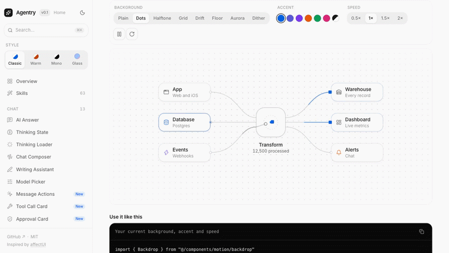

Output

Result
Delivered video-2-slack.gif: 896x504, 160 frames at 20 fps (50 ms per frame, exactly 8.0 s), infinite loop, 128 colours, 780 KB (limit 2 MB). It passes the skill's validate_gif(is_emoji=False).
What the skill changed: it supplies the pipeline (GIFBuilder: global palette + optional dedupe) and the validators, and names the real constraints (message GIFs are not 128x128 emoji; fps 10-30; 48-128 colours). The skill's helpers ran fine with uv in a scratch venv, so no swap was needed. The skill has no video import, so frames were extracted from the MP4 with ffmpeg and fed to GIFBuilder as PIL images.
Decisions and findings: (1) chose 20 fps rather than 15 because GIF frame delays are whole centiseconds: 15 fps came out as 16.7 fps / 7.2 s (10% fast) in validate_gif; 20 fps = 50 ms is exact. (2) 896x504 over 960x540 because 960x540 came out at 2.65 MB (cause not investigated). (3) Gotcha: is_slack_ready() defaults to the emoji check and returns False for a message-sized GIF; used validate_gif(is_emoji=False) instead. Nothing needed to be swapped or could not run.
Terminal
# Fetched the real SKILL.md and the helpers it names: core/gif_builder.py, validators.py, easing.py, frame_composer.py.
gh api repos/anthropics/skills/contents/skills/slack-gif-creator --jq '.[]|.path+" "+.type' # then fetch SKILL.md + core/*.py
skills/slack-gif-creator/LICENSE.txt file
skills/slack-gif-creator/SKILL.md file
skills/slack-gif-creator/core dir
skills/slack-gif-creator/requirements.txt file
# Input: 8 s, 1280x720, 30 fps screen recording of a UI (small text). 292,987 bytes.
ffprobe -v error -show_entries stream=width,height,r_frame_rate,duration,codec_name -of default=nw=1 fixtures/video/clip.mp4
codec_name=h264
width=1280
height=720
r_frame_rate=30/1
duration=8.000000
# The skill's Python helpers install and run with uv in scratch; no swap needed.
uv venv .venv && uv pip install --python .venv/bin/python -r skill/requirements.txt && .venv/bin/python -c "import PIL,imageio,numpy;print('ok',PIL.__version__)"
ok 13.0.0
# Skill lists message GIFs as 480x480; validate_gif(is_emoji=False) accepts min side 320-640 with aspect <= 2, so 640x360 passes. Plenty of size budget left, so go bigger and smoother.
.venv/bin/python make_gif.py 640 360 10 128 try1.gif # frames via ffmpeg -> GIFBuilder.add_frame -> save(num_colors=128)
Size: 283.7 KB (0.28 MB)
Dimensions: 640x360
Frames: 80 @ 10 fps
Duration: 8.0s
Colors: 128
validate_gif(is_emoji=False) -> True
# The validator exposes a timing trap: GIF delays are whole centiseconds, 1000/15 = 66.7 ms is stored as 60 ms, so the 8 s clip would play in 7.2 s (10% fast). Use a frame rate whose period is a multiple of 10 ms: 20 fps = 50 ms.
.venv/bin/python make_gif.py 800 450 15 128 try2.gif
Size: 570.7 KB (0.56 MB)
Frames: 120 @ 15 fps
Validating try2.gif:
Frames: 120 @ 16.7 fps (7.2s)
# 20 fps is exact (8.0 s). 960x540 blows the 2 MB budget (2.65 MB) while 864x486 and 896x504 land at ~0.7-0.8 MB; I did not investigate why the size jumps (palette/dither behaviour is a guess), just stayed on the measured-safe side.
.venv/bin/python make_gif.py 800 450 20 128 try3.gif && .venv/bin/python make_gif.py 960 540 20 128 try4.gif
try3.gif Size: 735.3 KB Frames: 160 @ 20.0 fps (8.0s)
try4.gif Size: 2712.7 KB (2.65 MB) Frames: 160 @ 20 fps
# is_slack_ready() defaults to is_emoji=True, so it says False for a message GIF (wants 128x128). Slack-readiness for a message GIF = validate_gif(is_emoji=False), which passes. Do not follow the 'Emoji should be 128x128' note here.
.venv/bin/python make_gif.py 896 504 20 128 public/skill-lab/slack-gif-creator/video-2-slack.gif
✓ GIF created successfully!
Size: 780.3 KB (0.76 MB)
Dimensions: 896x504
Frames: 160 @ 20 fps
Duration: 8.0s
Colors: 128
Validating video-2-slack.gif:
Dimensions: 896x504
Size: 780.3 KB
Frames: 160 @ 20.0 fps (8.0s)
validate_gif(is_emoji=False) -> True is_slack_ready(path) -> False
# loop=0 means infinite loop. The source clip already ends where it starts (first/last frames differ by 0.21/255), so the loop seam is invisible. 50 ms on every frame = exactly real-time.
python3 - <<'PY' # reopen the final GIF with Pillow
im=Image.open(gif); durations per frame; loop flag; first vs last frame diff
PY
frames 160 size (896, 504) frame_delay_ms {50} total_s 8.0 loop 0
first-vs-last frame mean abs diff (0-255): 0.21
file: 799,011 bytes (780 KB)
# Readability check on a real frame at the delivered size.
ffmpeg -i video-2-slack.gif -vf 'select=eq(n\,100)' -frames:v 1 video-2-frame.png
(frame 100 saved, checked visually: sidebar labels, node labels and the 'Transform 12,500 processed' counter are all legible)
Files
make_gif.py
import sys, subprocess, glob, os sys.path.insert(0, class="s">"skill") from PIL import Image from core.gif_builder import GIFBuilder from core.validators import validate_gif, is_slack_ready SRC = class="s">"/Users/kametayturar/agentic-ui/ai-answer/docs/skill-lab/fixtures/video/clip.mp4" W, H, FPS, COLORS = int(sys.argv[1]), int(sys.argv[2]), int(sys.argv[3]), int(sys.argv[4]) out = sys.argv[5] os.makedirs(class="s">"frames", exist_ok=True) for f in glob.glob(class="s">"frames/*.png"): os.remove(f) subprocess.run([class="s">"ffmpeg",class="s">"-v",class="s">"error",class="s">"-y",class="s">"-i",SRC,class="s">"-vf",fclass="s">"fps={FPS},scale={W}:{H}:flags=lanczos",class="s">"frames/f%03d.png"],check=True) builder = GIFBuilder(width=W, height=H, fps=FPS) for p in sorted(glob.glob(class="s">"frames/*.png")): builder.add_frame(Image.open(p)) info = builder.save(out, num_colors=COLORS, remove_duplicates=False) print(validate_gif(out, is_emoji=False)[0], class="s">"slack_ready:", is_slack_ready(out))